Snapchat Lense Filters
Augmented Reality?
More Than Just A Picture
Adding the Effect
Key to Success
Snapchat is a photo-sharing application that was first launched in September 2011. It enables users to take and send photos and short videos that automatically delete after a set amount of time. Beginning in September 2015, Snapchat incorporated augmented reality into the experience through a feature called Lense Filters.
Why use Snapchat instead of taking a picture with your phone's generic camera app and sending it via text? Snapchat Lense Filters add real-time special effects to images and have rapidly grown in popularity since their addition. Specific examples include the illusion of the user living under the sea, possessing kitchy anime eyes, crying or drooling, and having a dog's rolling tongue once the user opens his or her mouth.
Snapchat's unique face-tracking algorithm is the sole reason to their advanced AR attributes. In order to properly use Snapchat Lense Filters, the user must first point his or her face directly towards the camera and hold his or her finger down on the screen to trigger the filters. At that point, the app traces an intricate outline of the user's face in order to superimpose a variety of unique filters, which the user can then select from.
These Lense Filters are just one of the many reasons why Snapchat is constantly evolving and growing in popularity among the masses. In addition to geotags and on-demand filters (i.e. current time and temperature), since these lenses are constantly being updated with brand-new and creative options, users incessantly flock to the app to see all the ways they can transform their faces.


 
